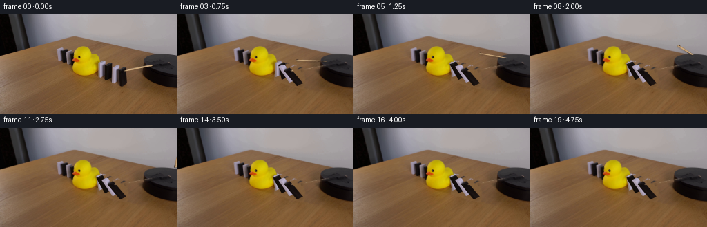
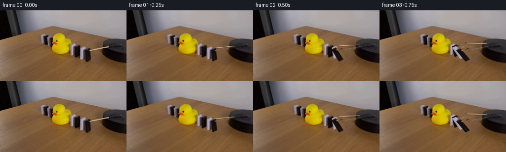
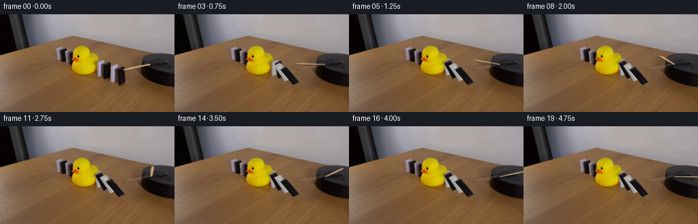
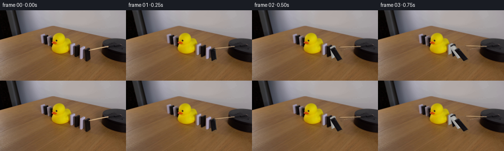
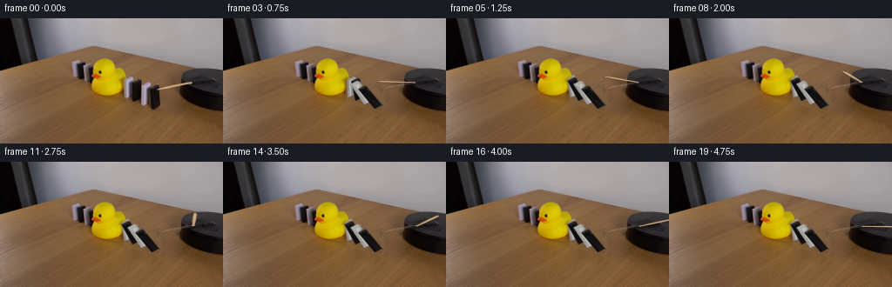
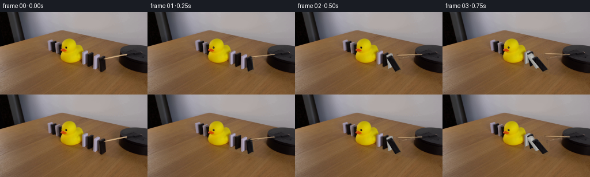

CODING AGENTS AS PIXEL WORLD MODELS
traex/GPT-6.1-Sol · 0057
点击播放 · 原生 RGB 像素
逐轮保存的候选
回放视频、检查图与代码变化。
每份候选均可单独播放。实际图片检查记录在下方工具轨迹中。
候选 01播放与检查图
点击播放 · 原生 RGB 像素


展开代码变化
--- 上一保存版本
+++ 本次保存版本
@@ -0,0 +1,190 @@
+from pathlib import Path
+import math
+import numpy as np
+import cv2
+from PIL import Image, ImageDraw, ImageFilter
+import artifact_io
+
+ROOT=Path(__file__).resolve().parent
+I=np.array(Image.open(ROOT/'first_frame.png').convert('RGB'))
+H,W=I.shape[:2]
+S=4
+
+def pmask(poly, scale=1):
+ m=Image.new('L',(W*scale,H*scale));d=ImageDraw.Draw(m)
+ d.polygon([(round(x*scale),round(y*scale)) for x,y in poly],fill=255)
+ return np.array(m)
+
+# The four alternating slabs between the rotating arm and the rubber duck.
+# Each measured quadrilateral carries the actual photographic surface texture.
+# Corners: left front, right front, right back, left back.
+blocks=[
+ dict(top=np.array([[143.,71.],[150.,68.],[153.,69.],[146.,72.]]),
+ bot=np.array([[143.,91.],[150.,88.],[153.,89.],[146.,92.]]), start=.69,limit=11),
+ dict(top=np.array([[152.,75.],[160.,71.],[162.,72.],[154.,76.]]),
+ bot=np.array([[152.,95.],[160.,91.],[162.,92.],[154.,96.]]),start=.52,limit=32),
+ dict(top=np.array([[163.,77.],[170.,74.],[173.,75.],[166.,78.]]),
+ bot=np.array([[163.,99.],[170.,96.],[173.,97.],[166.,100.]]),start=.34,limit=42),
+ dict(top=np.array([[173.,81.],[181.,77.],[183.,78.],[175.,82.]]),
+ bot=np.array([[174.,104.],[182.,100.],[184.,101.],[176.,105.]]),start=.16,limit=50)
+]
+# Renderable faces: broad face, thin side, and narrow top bevel.
+for b in blocks:
+ t,q=b['top'],b['bot']
+ b['faces']=[np.array([t[0],t[1],q[1],q[0]]),
+ np.array([t[1],t[2],q[2],q[1]]),t.copy()]
+ mask=np.zeros((H,W),np.uint8)
+ for f in b['faces']:
+ mask=np.maximum(mask,pmask(f))
+ b['mask']=cv2.GaussianBlur(cv2.dilate(mask,np.ones((2,2),np.uint8)),(3,3),.45)/255.
+
+# Matte of the duck, including its orange beak, dark eye and softly lit edge.
+r,g,bl=I.astype(float).transpose(2,0,1)
+yy,xx=np.mgrid[:H,:W]
+sel=(xx>=103)&(xx<=146)&(yy>=44)&(yy<=90)&(r>155)&(g>118)&(bl<125)&(r-bl>65)
+num,lab,stats,cent=cv2.connectedComponentsWithStats(sel.astype(np.uint8),8)
+main=1+np.argmax(stats[1:,4]); duck=(lab==main).astype(np.uint8)*255
+# Fill small interior holes (the eye and molded details).
+contours,_=cv2.findContours(duck,cv2.RETR_EXTERNAL,cv2.CHAIN_APPROX_SIMPLE)
+duck[:]=0;cv2.drawContours(duck,contours,-1,255,-1)
+duck=cv2.GaussianBlur(duck,(3,3),.38)/255.
+
+# Reconstruct only the small regions previously hidden by the moving objects.
+remove=np.zeros((H,W),np.uint8)
+for b in blocks:remove=np.maximum(remove,(b['mask']*255).astype(np.uint8))
+# Original contact shadows are re-created at the new positions below.
+shadow_remove=pmask([(141,87),(149,88),(181,100),(185,104),(182,108),(169,105),(141,96)])
+remove=np.maximum(remove,shadow_remove)
+remove=(remove*(1-duck)).astype(np.uint8)
+# Sampling a low-order lighting field from the unobstructed wooden tabletop.
+wood=(xx>55)&(xx<203)&(yy>49)&(yy<139)&(r-g>20)&(g-bl>17)&(r>100)&(g>69)&(bl>40)&(remove==0)&(duck<.1)
+X=xx/256.;Y=yy/144.
+terms=np.stack([np.ones_like(X),X,Y,X*X,X*Y,Y*Y,X**3,X*X*Y,X*Y*Y,Y**3],axis=-1)
+coef=np.linalg.lstsq(terms[wood],I[wood].astype(float),rcond=None)[0]
+field=terms@coef
+# Actual fine wood grain, from a clear adjacent patch, preserves photographic texture.
+texture=np.zeros_like(field)
+for y in range(H):
+ sy=110+(y%27)
+ for x in range(W):
+ sx=70+(x%112)
+ texture[y,x]=I[sy,sx].astype(float)-field[sy,sx]
+texture=np.clip(texture,-6,6)*.65
+woodclean=np.clip(field+texture,0,255)
+# Smooth the edge of reconstructed regions without changing the rest of the frame.
+a=cv2.GaussianBlur(remove,(3,3),.5).astype(float)/255.
+a*=1-duck
+clean=I.astype(float)*(1-a[:,:,None])+woodclean*a[:,:,None]
+
+# Remove the wooden radial arm. Its original outline is only a few pixels thick.
+arm_poly=[(179.6,81.0),(181.2,83.0),(221.8,76.0),(221.0,71.9),(215.6,72.8)]
+armmask=pmask(arm_poly)
+# Inpainting here is local: part of the arm lies on the table, part on the disk.
+arm_removed=cv2.inpaint(I,cv2.dilate(armmask,np.ones((3,3),np.uint8)),4,cv2.INPAINT_TELEA)
+arm_alpha=cv2.GaussianBlur(armmask,(3,3),.65)/255.
+clean=clean*(1-arm_alpha[:,:,None])+arm_removed.astype(float)*arm_alpha[:,:,None]
+# On wood use the reconstructed illumination field instead of blur-smearing the stick.
+tablearm=arm_alpha*(xx<208)*(1-duck)
+clean=clean*(1-tablearm[:,:,None])+woodclean*tablearm[:,:,None]
+
+original_hi=cv2.resize(I.astype(float),(W*S,H*S),interpolation=cv2.INTER_CUBIC)
+clean_hi=cv2.resize(clean,(W*S,H*S),interpolation=cv2.INTER_CUBIC)
+
+def composite(frame, rgb, alpha):
+ return frame*(1-alpha[:,:,None])+rgb*alpha[:,:,None]
+
+def face_warp(frame, source, target, light=1.):
+ src=np.array(source,np.float32)*S;dst=np.array(target,np.float32)*S
+ trans=cv2.getPerspectiveTransform(src,dst)
+ image=cv2.warpPerspective(original_hi,trans,(W*S,H*S),flags=cv2.INTER_LINEAR)
+ # Use the target polygon for a clean, anti-aliased rigid-object boundary.
+ m=pmask(target,S).astype(float)/255.
+ m=cv2.GaussianBlur(m,(3,3),.4)
+ return composite(frame,np.clip(image*light,0,255),m)
+
+def positions(b, angle):
+ angle=math.radians(angle)
+ q=b['bot'].copy();t0=b['top'];height=q-t0
+ # Orthographic oblique projection of rotation about each bottom edge.
+ fall=np.array([-24.,-10.5])
+ t=q-height*math.cos(angle)+fall*math.sin(angle)
+ return t,q
+
+def domino_angle(b,t):
+ elapsed=t-b['start']
+ if elapsed<=0:return 0.
+ # Gravity accelerates the initial tip, followed by compliant contact with the
+ # next slab. The duck supplies a stable stop to this side of the chain.
+ duration=.40
+ u=min(elapsed/duration,1)
+ theta=b['limit']*(.20*u+.80*u*u)
+ if elapsed>duration:
+ z=elapsed-duration
+ theta=b['limit']+1.8*math.exp(-6*z)*math.sin(14*z)
+ return theta
+
+def draw_shadows(frame, angles):
+ m=Image.new('L',(W*S,H*S));d=ImageDraw.Draw(m)
+ for b,ang in zip(blocks,angles):
+ t,q=positions(b,ang)
+ # Soft ambient shadow extends away from the key light, across the wood.
+ footprint=[q[0]+[-4,0],q[1]+[-4,0],t[1]+[-5,20*math.cos(math.radians(ang))],t[0]+[-5,20*math.cos(math.radians(ang))]]
+ d.polygon([(round(x*S),round(y*S)) for x,y in footprint],fill=27)
+ p=q.mean(0);d.ellipse([(p[0]-7)*S,(p[1]-2)*S,(p[0]+4)*S,(p[1]+2)*S],fill=42)
+ m=np.array(m.filter(ImageFilter.GaussianBlur(1.2*S))).astype(float)/255.
+ return frame*(1-m[:,:,None]*.62)
+
+# Radial arm rotating about the axis of the black platform, projected into the
+# fixed camera. Positive angle is clockwise as seen from above.
+arm_src=np.array([[181.,80.2],[220.3,72.7],[220.9,75.5],[181.3,82.5]],np.float32)
+def arm_corners(time):
+ theta=math.radians(153.6+44*time)
+ v=np.array([math.cos(theta),.35*math.sin(theta)])
+ w=np.array([-math.sin(theta),.35*math.cos(theta)])
+ p=np.array([251.5,69.3])
+ outer=p+78.8*v;inner=p+34.5*v
+ thick=2.2
+ return np.array([outer+thick*w,inner+thick*w,inner-thick*w,outer-thick*w])
+
+def draw_arm(frame,time):
+ target=arm_corners(time)
+ m=Image.new('L',(W*S,H*S));d=ImageDraw.Draw(m)
+ d.polygon([(round(x*S),round((y+2.0)*S)) for x,y in target],fill=60)
+ shadow=np.array(m.filter(ImageFilter.GaussianBlur(.75*S))).astype(float)/255.
+ frame=frame*(1-shadow[:,:,None]*.5)
+ # Reuse the long fine grain of the photographed wooden rod.
+ frame=face_warp(frame,arm_src,target,1.)
+ return frame
+
+def generate():
+ frames=[I.copy()]
+ duck_hi=cv2.resize(duck,(W*S,H*S),interpolation=cv2.INTER_LINEAR)
+ for k in range(1,20):
+ time=k/4.
+ angles=[domino_angle(b,time) for b in blocks]
+ frame=clean_hi.copy()
+ frame=draw_shadows(frame,angles)
+ for b,ang in zip(blocks,angles):
+ if ang<.01:
+ # Untouched slabs keep all original bevels and lens softness.
+ alpha=cv2.resize(b['mask'],(W*S,H*S),interpolation=cv2.INTER_LINEAR)
+ frame=composite(frame,original_hi,alpha)
+ else:
+ top,bot=positions(b,ang)
+ targets=[np.array([top[0],top[1],bot[1],bot[0]]),
+ np.array([top[1],top[2],bot[2],bot[1]]),top]
+ for j,(src,dst) in enumerate(zip(b['faces'],targets)):
+ # Small changes in lambertian illumination as the slab tips.
+ gain=1+.045*math.sin(math.radians(ang)) if j==0 else 1+.10*math.sin(math.radians(ang))
+ frame=face_warp(frame,src,dst,gain)
+ # The large rubber body absorbs the small impacts; the opposite side
+ # of the domino line remains standing throughout.
+ frame=composite(frame,original_hi,duck_hi)
+ frame=draw_arm(frame,time)
+ small=cv2.resize(frame,(W,H),interpolation=cv2.INTER_AREA)
+ frames.append(np.clip(np.rint(small),0,255).astype(np.uint8))
+ frames=np.array(frames,dtype=np.uint8)
+ artifact_io.save(frames,ROOT)
+ return frames
+
+if __name__=='__main__':generate()
候选 02播放与检查图
点击播放 · 原生 RGB 像素


展开代码变化
--- 上一保存版本
+++ 本次保存版本
@@ -19,12 +19,12 @@
# Each measured quadrilateral carries the actual photographic surface texture.
# Corners: left front, right front, right back, left back.
blocks=[
- dict(top=np.array([[143.,71.],[150.,68.],[153.,69.],[146.,72.]]),
+ dict(top=np.array([[143.,71.],[150.,67.],[153.,68.],[146.,72.]]),
bot=np.array([[143.,91.],[150.,88.],[153.,89.],[146.,92.]]), start=.69,limit=11),
- dict(top=np.array([[152.,75.],[160.,71.],[162.,72.],[154.,76.]]),
+ dict(top=np.array([[152.,74.],[160.,70.],[162.,71.],[154.,75.]]),
bot=np.array([[152.,95.],[160.,91.],[162.,92.],[154.,96.]]),start=.52,limit=32),
- dict(top=np.array([[163.,77.],[170.,74.],[173.,75.],[166.,78.]]),
- bot=np.array([[163.,99.],[170.,96.],[173.,97.],[166.,100.]]),start=.34,limit=42),
+ dict(top=np.array([[162.,77.],[170.,73.],[173.,74.],[165.,78.]]),
+ bot=np.array([[162.,99.],[170.,95.],[173.,96.],[165.,100.]]),start=.34,limit=42),
dict(top=np.array([[173.,81.],[181.,77.],[183.,78.],[175.,82.]]),
bot=np.array([[174.,104.],[182.,100.],[184.,101.],[176.,105.]]),start=.16,limit=50)
]
@@ -52,6 +52,12 @@
# Reconstruct only the small regions previously hidden by the moving objects.
remove=np.zeros((H,W),np.uint8)
for b in blocks:remove=np.maximum(remove,(b['mask']*255).astype(np.uint8))
+# Include the photographic bevel and its anti-aliasing beyond idealized faces.
+silhouette=pmask([(141,71),(150,66),(154,67),(154,71),(159,69),
+ (163,70),(163,76),(170,72),(174,73),(174,77),(179,75),
+ (183,76),(185,78),(185,103),(178,106),(172,104),(170,102),
+ (161,102),(160,99),(150,98),(150,95),(141,95)])
+remove=np.maximum(remove,silhouette)
# Original contact shadows are re-created at the new positions below.
shadow_remove=pmask([(141,87),(149,88),(181,100),(185,104),(182,108),(169,105),(141,96)])
remove=np.maximum(remove,shadow_remove)
@@ -71,6 +77,9 @@
texture[y,x]=I[sy,sx].astype(float)-field[sy,sx]
texture=np.clip(texture,-6,6)*.65
woodclean=np.clip(field+texture,0,255)
+woodclean[:,:,0]-=2.5
+woodclean[:,:,1]+=.6
+woodclean[:,:,2]+=np.clip(6-(yy-75)*.17,1,7)
# Smooth the edge of reconstructed regions without changing the rest of the frame.
a=cv2.GaussianBlur(remove,(3,3),.5).astype(float)/255.
a*=1-duck
@@ -93,10 +102,28 @@
def composite(frame, rgb, alpha):
return frame*(1-alpha[:,:,None])+rgb*alpha[:,:,None]
-def face_warp(frame, source, target, light=1.):
+def face_warp(frame, source, target, light=1., kind=None):
src=np.array(source,np.float32)*S;dst=np.array(target,np.float32)*S
trans=cv2.getPerspectiveTransform(src,dst)
image=cv2.warpPerspective(original_hi,trans,(W*S,H*S),flags=cv2.INTER_LINEAR)
+ if kind is not None:
+ color,side=kind
+ # The changing angle reveals small regions hidden in frame zero.
+ # Extend the measured material into those regions, not neighboring wood.
+ lum=image.mean(axis=2)
+ if color=='white':
+ if side==0:
+ lum=np.clip(lum,150,179)
+ elif side==1:
+ lum=np.clip(lum,110,145)
+ else:
+ lum=np.clip(lum,145,163)
+ image=np.stack([lum+1,lum,lum-4],axis=-1)
+ else:
+ if side==0:lum=np.clip(lum,13,31)
+ elif side==1:lum=np.clip(lum,30,52)
+ else:lum=np.clip(lum,42,58)
+ image=np.stack([lum+1,lum-1,lum+1],axis=-1)
# Use the target polygon for a clean, anti-aliased rigid-object boundary.
m=pmask(target,S).astype(float)/255.
m=cv2.GaussianBlur(m,(3,3),.4)
@@ -141,8 +168,8 @@
theta=math.radians(153.6+44*time)
v=np.array([math.cos(theta),.35*math.sin(theta)])
w=np.array([-math.sin(theta),.35*math.cos(theta)])
- p=np.array([251.5,69.3])
- outer=p+78.8*v;inner=p+34.5*v
+ p=np.array([221.,74.])
+ outer=p+44.4*v;inner=p
thick=2.2
return np.array([outer+thick*w,inner+thick*w,inner-thick*w,outer-thick*w])
@@ -164,7 +191,7 @@
angles=[domino_angle(b,time) for b in blocks]
frame=clean_hi.copy()
frame=draw_shadows(frame,angles)
- for b,ang in zip(blocks,angles):
+ for bi,(b,ang) in enumerate(zip(blocks,angles)):
if ang<.01:
# Untouched slabs keep all original bevels and lens softness.
alpha=cv2.resize(b['mask'],(W*S,H*S),interpolation=cv2.INTER_LINEAR)
@@ -176,7 +203,7 @@
for j,(src,dst) in enumerate(zip(b['faces'],targets)):
# Small changes in lambertian illumination as the slab tips.
gain=1+.045*math.sin(math.radians(ang)) if j==0 else 1+.10*math.sin(math.radians(ang))
- frame=face_warp(frame,src,dst,gain)
+ frame=face_warp(frame,src,dst,gain,('white' if bi%2==0 else 'black',j))
# The large rubber body absorbs the small impacts; the opposite side
# of the domino line remains standing throughout.
frame=composite(frame,original_hi,duck_hi)
候选 03播放与检查图
点击播放 · 原生 RGB 像素


展开代码变化
--- 上一保存版本
+++ 本次保存版本
@@ -113,9 +113,9 @@
lum=image.mean(axis=2)
if color=='white':
if side==0:
- lum=np.clip(lum,150,179)
+ lum=np.clip(lum,137,184)
elif side==1:
- lum=np.clip(lum,110,145)
+ lum=np.clip(lum,90,145)
else:
lum=np.clip(lum,145,163)
image=np.stack([lum+1,lum,lum-4],axis=-1)
@@ -208,7 +208,9 @@
# of the domino line remains standing throughout.
frame=composite(frame,original_hi,duck_hi)
frame=draw_arm(frame,time)
- small=cv2.resize(frame,(W,H),interpolation=cv2.INTER_AREA)
+ # Work as RGB residuals, so the fixed scene retains original pixels
+ # rather than being softened by an unnecessary up/downsample cycle.
+ small=I.astype(float)+cv2.resize(frame-original_hi,(W,H),interpolation=cv2.INTER_AREA)
frames.append(np.clip(np.rint(small),0,255).astype(np.uint8))
frames=np.array(frames,dtype=np.uint8)
artifact_io.save(frames,ROOT)
可观测工具轨迹
实际执行的命令与返回图片。
命令 1exit 0
/bin/bash -lc "ls -la && cat prompt.txt && printf '\\n---RULES---\\n' && cat GENERATION_RULES.md"
命令 2exit 0
/bin/bash -lc "cat artifact_io.py && python - <<'PY'
from PIL import Image
import numpy as np
im=np.array(Image.open('first_frame.png')); print(im.shape)
p=np.array(Image.fromarray(im).resize((128,72)))
# categorical pixel map
for row in p:
s=''
for r,g,b in row.astype(float):
if max(r,g,b)<35:c='#'
elif max(r,g,b)<65:c='X'
elif max(r,g,b)<100:c='x'
elif r>140 and g>120 and b<g*.68:c='Y'
elif min(r,g,b)>210:c='W'
elif min(r,g,b)>170 and max(r,g,b)-min(r,g,b)<40:c='w'
elif r>g*1.12 and g>b*1.10:c='t'
elif max(r,g,b)-min(r,g,b)<30:c='.'
else:c='o'
s+=c
print(s)
PY"命令 3exit 0
/bin/bash -lc "python - <<'PY'
from PIL import Image
import numpy as np
im=np.array(Image.open('first_frame.png'))
# crops with detailed classification
for name,(x0,y0,x1,y1) in [('blocks',(72,45,184,110)),('platform',(183,55,256,110))]:
print('\\n',name,'x',x0,'y',y0)
for y in range(y0,y1):
s=''
for r,g,b in im[y,x0:x1].astype(float):
if max(r,g,b)<24:c='#'
elif max(r,g,b)<45:c='K'
elif max(r,g,b)<65:c='X'
elif max(r,g,b)<90:c='x'
elif max(r,g,b)<120:c=':'
elif r>150 and g>125 and b<g*.62:c='Y'
elif r>180 and g<145 and b<75:c='O'
elif r-g>12 and g-b>16:c='t'
elif min(r,g,b)>200:c='W'
elif min(r,g,b)>160:c='w'
elif min(r,g,b)>120:c='.'
else:c='o'
s+=c
print(f'{y:3} {s}')
PY"命令 4exit 0
/bin/bash -lc "python - <<'PY'
from PIL import Image
import numpy as np
im=np.array(Image.open('first_frame.png'))
for y in range(64,88):
print(y,' '.join(f'{x}:{tuple(im[y,x])}' for x in range(176,233,3)))
PY"命令 5exit 0
/bin/bash -lc "python - <<'PY'
import numpy as np
from PIL import Image
I=np.array(Image.open('first_frame.png')).astype(int)
# enumerate contiguous spans in area dark/neutral/wood/duck
for y in [48,50,52,54,56,58,60,62,64,66,68,70,72,74,76,78,80,82,84,86,88,90,92,94,96,98,100,102,104]:
s=''
for x in range(78,188):
r,g,b=I[y,x];
c='B' if r<95 and abs(r-b)<24 else ('W' if abs(r-b)<28 and r>=95 else ('D' if r>160 and g>120 and b<110 else '_'))
s+=c
spans=[];start=78;c=s[0]
for x,cc in enumerate(s[1:],79):
if cc"'!=c:
if c!='"'_':spans.append(f'{c} {start}-{x-1}')
c=cc;start=x
if c"'!='"'_':spans.append(f'{c} {start}-187')
print(y,', '.join(spans))
PY"命令 6exit 0
/bin/bash -lc "python - <<'PY'
from PIL import Image
import numpy as np
I=np.array(Image.open('first_frame.png')).astype(int)
for y in range(58,88):
s=''
for x in range(175,256):
r,g,b=I[y,x];
c='+' if r-g>7 and r>g*1.11 and g-b>6 else '.'
if r>140 and r-g>15 and g-b>16:c='T'
s+=c
print(y,s)
PY"命令 7exit 0
/bin/bash -lc "python - <<'PY'
import numpy as np
from PIL import Image
I=np.array(Image.open('first_frame.png')).astype(int)
for name,x0,x1,y0,y1 in [('near',158,185,73,104),('next',139,164,66,96),('far',80,109,47,77)]:
print(name,'x=',list(range(x0,x1)))
for y in range(y0,y1):
print(y,' '.join(f'{v:3}' for v in I[y,x0:x1,0]))
PY"命令 8exit 0
/bin/bash -lc "python - <<'PY' import importlib.util for x in ['cv2','scipy','PIL']: print(x,importlib.util.find_spec(x)) PY"
命令 9exit 0
/bin/bash -lc "cat > generate.py <<'PY'
from pathlib import Path
import math
import numpy as np
import cv2
from PIL import Image, ImageDraw, ImageFilter
import artifact_io
ROOT=Path(__file__).resolve().parent
I=np.array(Image.open(ROOT/'first_frame.png').convert('RGB'))
H,W=I.shape[:2]
S=4
def pmask(poly, scale=1):
m=Image.new('L',(W*scale,H*scale));d=ImageDraw.Draw(m)
d.polygon([(round(x*scale),round(y*scale)) for x,y in poly],fill=255)
return np.array(m)
# The four alternating slabs between the rotating arm and the rubber duck.
# Each measured quadrilateral carries the actual photographic surface texture.
# Corners: left front, right front, right back, left back.
blocks=[
dict(top=np.array([[143.,71.],[150.,68.],[153.,69.],[146.,72.]]),
bot=np.array([[143.,91.],[150.,88.],[153.,89.],[146.,92.]]), start=.69,limit=11),
dict(top=np.array([[152.,75.],[160.,71.],[162.,72.],[154.,76.]]),
bot=np.array([[152.,95.],[160.,91.],[162.,92.],[154.,96.]]),start=.52,limit=32),
dict(top=np.array([[163.,77.],[170.,74.],[173.,75.],[166.,78.]]),
bot=np.array([[163.,99.],[170.,96.],[173.,97.],[166.,100.]]),start=.34,limit=42),
dict(top=np.array([[173.,81.],[181.,77.],[183.,78.],[175.,82.]]),
bot=np.array([[174.,104.],[182.,100.],[184.,101.],[176.,105.]]),start=.16,limit=50)
]
# Renderable faces: broad face, thin side, and narrow top bevel.
for b in blocks:
t,q=b['top'],b['bot']
b['faces']=[np.array([t[0],t[1],q[1],q[0]]),
np.array([t[1],t[2],q[2],q[1]]),t.copy()]
mask=np.zeros((H,W),np.uint8)
for f in b['faces']:
mask=np.maximum(mask,pmask(f))
b['mask']=cv2.GaussianBlur(cv2.dilate(mask,np.ones((2,2),np.uint8)),(3,3),.45)/255.
# Matte of the duck, including its orange beak, dark eye and softly lit edge.
r,g,bl=I.astype(float).transpose(2,0,1)
yy,xx=np.mgrid[:H,:W]
sel=(xx>=103)&(xx<=146)&(yy>=44)&(yy<=90)&(r>155)&(g>118)&(bl<125)&(r-bl>65)
num,lab,stats,cent=cv2.connectedComponentsWithStats(sel.astype(np.uint8),8)
main=1+np.argmax(stats[1:,4]); duck=(lab==main).astype(np.uint8)*255
# Fill small interior holes (the eye and molded details).
contours,_=cv2.findContours(duck,cv2.RETR_EXTERNAL,cv2.CHAIN_APPROX_SIMPLE)
duck[:]=0;cv2.drawContours(duck,contours,-1,255,-1)
duck=cv2.GaussianBlur(duck,(3,3),.38)/255.
# Reconstruct only the small regions previously hidden by the moving objects.
remove=np.zeros((H,W),np.uint8)
for b in blocks:remove=np.maximum(remove,(b['mask']*255).astype(np.uint8))
# Original contact shadows are re-created at the new positions below.
shadow_remove=pmask([(141,87),(149,88),(181,100),(185,104),(182,108),(169,105),(141,96)])
remove=np.maximum(remove,shadow_remove)
remove=(remove*(1-duck)).astype(np.uint8)
# Sampling a low-order lighting field from the unobstructed wooden tabletop.
wood=(xx>55)&(xx<203)&(yy>49)&(yy<139)&(r-g>20)&(g-bl>17)&(r>100)&(g>69)&(bl>40)&(remove==0)&(duck<.1)
X=xx/256.;Y=yy/144.
terms=np.stack([np.ones_like(X),X,Y,X*X,X*Y,Y*Y,X**3,X*X*Y,X*Y*Y,Y**3],axis=-1)
coef=np.linalg.lstsq(terms[wood],I[wood].astype(float),rcond=None)[0]
field=terms@coef
# Actual fine wood grain, from a clear adjacent patch, preserves photographic texture.
texture=np.zeros_like(field)
for y in range(H):
sy=110+(y%27)
for x in range(W):
sx=70+(x%112)
texture[y,x]=I[sy,sx].astype(float)-field[sy,sx]
texture=np.clip(texture,-6,6)*.65
woodclean=np.clip(field+texture,0,255)
# Smooth the edge of reconstructed regions without changing the rest of the frame.
a=cv2.GaussianBlur(remove,(3,3),.5).astype(float)/255.
a*=1-duck
clean=I.astype(float)*(1-a[:,:,None])+woodclean*a[:,:,None]
# Remove the wooden radial arm. Its original outline is only a few pixels thick.
arm_poly=[(179.6,81.0),(181.2,83.0),(221.8,76.0),(221.0,71.9),(215.6,72.8)]
armmask=pmask(arm_poly)
# Inpainting here is local: part of the arm lies on the table, part on the disk.
arm_removed=cv2.inpaint(I,cv2.dilate(armmask,np.ones((3,3),np.uint8)),4,cv2.INPAINT_TELEA)
arm_alpha=cv2.GaussianBlur(armmask,(3,3),.65)/255.
clean=clean*(1-arm_alpha[:,:,None])+arm_removed.astype(float)*arm_alpha[:,:,None]
# On wood use the reconstructed illumination field instead of blur-smearing the stick.
tablearm=arm_alpha*(xx<208)*(1-duck)
clean=clean*(1-tablearm[:,:,None])+woodclean*tablearm[:,:,None]
original_hi=cv2.resize(I.astype(float),(W*S,H*S),interpolation=cv2.INTER_CUBIC)
clean_hi=cv2.resize(clean,(W*S,H*S),interpolation=cv2.INTER_CUBIC)
def composite(frame, rgb, alpha):
return frame*(1-alpha[:,:,None])+rgb*alpha[:,:,None]
def face_warp(frame, source, target, light=1.):
src=np.array(source,np.float32)*S;dst=np.array(target,np.float32)*S
trans=cv2.getPerspectiveTransform(src,dst)
image=cv2.warpPerspective(original_hi,trans,(W*S,H*S),flags=cv2.INTER_LINEAR)
# Use the target polygon for a clean, anti-aliased rigid-object boundary.
m=pmask(target,S).astype(float)/255.
m=cv2.GaussianBlur(m,(3,3),.4)
return composite(frame,np.clip(image*light,0,255),m)
def positions(b, angle):
angle=math.radians(angle)
q=b['bot'].copy();t0=b['top'];height=q-t0
# Orthographic oblique projection of rotation about each bottom edge.
fall=np.array([-24.,-10.5])
t=q-height*math.cos(angle)+fall*math.sin(angle)
return t,q
def domino_angle(b,t):
elapsed=t-b['start']
if elapsed<=0:return 0.
# Gravity accelerates the initial tip, followed by compliant contact with the
# next slab. The duck supplies a stable stop to this side of the chain.
duration=.40
u=min(elapsed/duration,1)
theta=b['limit']*(.20*u+.80*u*u)
if elapsed>duration:
z=elapsed-duration
theta=b['limit']+1.8*math.exp(-6*z)*math.sin(14*z)
return theta
def draw_shadows(frame, angles):
m=Image.new('L',(W*S,H*S));d=ImageDraw.Draw(m)
for b,ang in zip(blocks,angles):
t,q=positions(b,ang)
# Soft ambient shadow extends away from the key light, across the wood.
footprint=[q[0]+[-4,0],q[1]+[-4,0],t[1]+[-5,20*math.cos(math.radians(ang))],t[0]+[-5,20*math.cos(math.radians(ang))]]
d.polygon([(round(x*S),round(y*S)) for x,y in footprint],fill=27)
p=q.mean(0);d.ellipse([(p[0]-7)*S,(p[1]-2)*S,(p[0]+4)*S,(p[1]+2)*S],fill=42)
m=np.array(m.filter(ImageFilter.GaussianBlur(1.2*S))).astype(float)/255.
return frame*(1-m[:,:,None]*.62)
# Radial arm rotating about the axis of the black platform, projected into the
# fixed camera. Positive angle is clockwise as seen from above.
arm_src=np.array([[181.,80.2],[220.3,72.7],[220.9,75.5],[181.3,82.5]],np.float32)
def arm_corners(time):
theta=math.radians(153.6+44*time)
v=np.array([math.cos(theta),.35*math.sin(theta)])
w=np.array([-math.sin(theta),.35*math.cos(theta)])
p=np.array([251.5,69.3])
outer=p+78.8*v;inner=p+34.5*v
thick=2.2
return np.array([outer+thick*w,inner+thick*w,inner-thick*w,outer-thick*w])
def draw_arm(frame,time):
target=arm_corners(time)
m=Image.new('L',(W*S,H*S));d=ImageDraw.Draw(m)
d.polygon([(round(x*S),round((y+2.0)*S)) for x,y in target],fill=60)
shadow=np.array(m.filter(ImageFilter.GaussianBlur(.75*S))).astype(float)/255.
frame=frame*(1-shadow[:,:,None]*.5)
# Reuse the long fine grain of the photographed wooden rod.
frame=face_warp(frame,arm_src,target,1.)
return frame
def generate():
frames=[I.copy()]
duck_hi=cv2.resize(duck,(W*S,H*S),interpolation=cv2.INTER_LINEAR)
for k in range(1,20):
time=k/4.
angles=[domino_angle(b,time) for b in blocks]
frame=clean_hi.copy()
frame=draw_shadows(frame,angles)
for b,ang in zip(blocks,angles):
if ang<.01:
# Untouched slabs keep all original bevels and lens softness.
alpha=cv2.resize(b['mask'],(W*S,H*S),interpolation=cv2.INTER_LINEAR)
frame=composite(frame,original_hi,alpha)
else:
top,bot=positions(b,ang)
targets=[np.array([top[0],top[1],bot[1],bot[0]]),
np.array([top[1],top[2],bot[2],bot[1]]),top]
for j,(src,dst) in enumerate(zip(b['faces'],targets)):
# Small changes in lambertian illumination as the slab tips.
gain=1+.045*math.sin(math.radians(ang)) if j==0 else 1+.10*math.sin(math.radians(ang))
frame=face_warp(frame,src,dst,gain)
# The large rubber body absorbs the small impacts; the opposite side
# of the domino line remains standing throughout.
frame=composite(frame,original_hi,duck_hi)
frame=draw_arm(frame,time)
small=cv2.resize(frame,(W,H),interpolation=cv2.INTER_AREA)
frames.append(np.clip(np.rint(small),0,255).astype(np.uint8))
frames=np.array(frames,dtype=np.uint8)
artifact_io.save(frames,ROOT)
return frames
if __name__=='__main__':generate()
PY
python generate.py"命令 10exit 1
/bin/bash -lc "python - <<'PY'
from PIL import Image
import numpy as np
import generate as g
for fn in ['00','01','03','06','19']:
I=np.array(Image.open('frames/'+fn+'.png')).astype(float)
print('\\nFRAME',fn,'region x130-190 step2')
for y in range(66,108,2):
s=''
for x in range(130,192,2):
r,g,b=I[y,x]
if max(r,g,b)<26:c='#'
elif max(r,g,b)<45:c='K'
elif max(r,g,b)<65:c='X'
elif max(r,g,b)<100:c='x'
elif r>150 and g>115 and r-b>65:c='Y'
elif abs(r-b)<30 and r>120:c='W'
elif r-g>15 and g-b>12:c='t'
else:c='.'
s+=c
print(y,s)
# clean boundary variation numeric
print('field errors',np.min(g.field),np.max(g.field))
print('duck area',g.duck.sum())
PY"命令 11exit 0
/bin/bash -lc "python - <<'PY'
import generate as m
import numpy as np
print('field',m.field[80,150],m.field[100,175],m.field[70,180], 'mask sum',m.remove.sum()/255, 'duck',m.duck.sum())
for t in [0,.25,.5,.75,1,2,3,4.75]:print(t,m.arm_corners(t))
PY"命令 12exit 0
/bin/bash -lc "python - <<'PY' import generate as m import numpy as np for y in [70,75,80,85,90,95,100,105]: print(y,[(x,m.I[y,x].tolist(),m.field[y,x].round(1).tolist()) for x in [137,139,141,184,187,190]]) PY"
命令 13exit 0
/bin/bash -lc "grep -n 'for .*blocks\\|bi\\|arm_' generate.py && python generate.py"
命令 14exit 0
/bin/bash -lc "python - <<'PY'
import numpy as np
from PIL import Image
for fn in ['01','06','19']:
I=np.array(Image.open('frames/'+fn+'.png')).astype(float)
print('frame',fn)
for y in range(66,107,2):
s=''
for x in range(130,191,2):
r,g,b=I[y,x]
c='#' if r<30 and abs(r-b)<20 else ('K' if r<62 and abs(r-b)<20 else ('W' if r>120 and abs(r-b)<28 else ('Y' if r>150 and g>118 and r-b>65 else 't')))
s+=c
print(y,s)
PY"命令 15exit 0
/bin/bash -lc "python generate.py && python - <<'PY'
from PIL import Image
import numpy as np
I=np.array(Image.open('first_frame.png'))
frames=np.stack([np.array(Image.open(f'frames/{k:02d}.png')) for k in range(20)])
assert frames.shape==(20,144,256,3) and frames.dtype==np.uint8
assert np.array_equal(frames[0],I)
print('Validated',frames.shape,'frame zero identical')
print('Static lower tabletop unchanged:',np.array_equal(frames[:,115:],np.broadcast_to(I[115:],frames[:,115:].shape)))
print('Artifacts: pixels.npz and index.html')
PY"保存候选 3 份；完成命令 15 次；可验证图片返回 0 张。原始 API 响应与完整日志保留在本地。